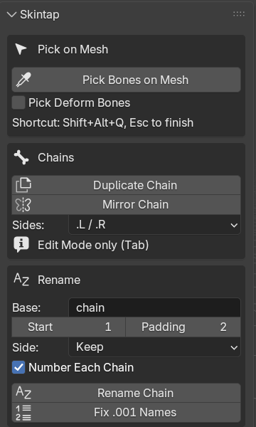
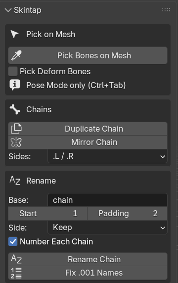

Skintap quick start
Installing Skintap and using its four tools. Back to the Skintap product page.
Install (Blender 4.2 or newer; tested on 4.2 LTS and 5.2 LTS)
- After checkout, download
skintap-1.0.2.zipfrom the link in Polar's email. Install the zip itself; do not unzip it first. If your browser unzips downloads by itself (Safari can), turn that off and download again. - In Blender, open Edit > Preferences > Get Extensions.
- Blender may first ask about internet access, with Continue Offline and Allow Online Access. Skintap needs no internet, so Continue Offline is fine.
- Open the drop-down menu (⌄) at the top right, choose Install from Disk... and pick the zip. Dragging the zip onto the Blender window also works. Skintap is enabled at once.
- Press N in the 3D Viewport and open the Skintap tab.
To update, install the newer zip the same way; it replaces the old version. If the picker was running while you updated, restart Blender. To remove Skintap, go to Preferences > Add-ons, find Skintap, and choose Uninstall from its drop-down menu.
Pick Bones on Mesh
- Select your character's armature and enter Pose Mode (Ctrl+Tab).
- With the mouse over the 3D Viewport, press Shift+Alt+Q, or click Pick Bones on Mesh in the Skintap tab, or use Pose > Skintap > Pick Bones on Mesh.

The Skintap tab in Pose Mode (Blender 5.2, UI scale 1.4). - Move the mouse over the body or the clothes. The label next to the cursor shows the bone that will be selected and, under it, which deform bone moves that spot, on which mesh.
- Click selects that bone and makes it active. Shift-click adds it to the selection. Orbit, pan and zoom work as usual while the picker runs.
- Esc or right-click ends the picker. The status bar reports what was selected. One Ctrl+Z undoes the whole picking session.
The first surface under the cursor wins, so a jacket wins over the shirt under it. Skintap reads the weights of the mesh as it is posed now, after its modifiers, Subdivision Surface included. Nothing is set up first and nothing is added to your .blend.
When the pick lands on a tweak or master control
When the bone with the most weight under the cursor is hidden (Rigify's DEF- bones are), Skintap selects the nearest visible bone that drives it: it follows the rig's constraints, then the parents, and reads the IK/FK switch as it is set.
- Rigify as generated shows its tweak controls, so clicks select tweak controls (
upper_arm_tweak.L). Hide the Tweak bone collections to get the IK or FK controls. - Other rigs: the nearest visible driver can be a master control that moves most of the body. Switch the limb to FK, or tick Pick Deform Bones.
- Pick Deform Bones selects the deform bone itself, even when it is hidden; the label says when it is. On Rigify that bone follows its controls, so it is for checking which bone carries the weight, not for posing.
Duplicate Chain
- In Edit Mode (Tab), select one or more chains: click the root, then Shift-click or Ctrl+] to add the children.
- Click Duplicate Chain (or Armature > Skintap > Duplicate Chain).
- The copy appears in the same place, selected, ready to move with G. The status bar lists the old and new names.
The copy takes the next free chain number: hair_01_01..03 becomes hair_02_01..03 (or hair_03 if hair_02 exists); Bone_12_0099.L becomes Bone_12_0100.L. A chain without a number gets one: spine_01..03 becomes spine_02_01..03. Parenting, roll, deform flag, bone collections, B-Bone settings, custom shapes and constraints are carried over; constraint targets inside the chain point to the copy.
Mirror Chain
- In Edit Mode, select the chain(s) on one side.
- Pick the convention under Sides:
.L / .R,_L / _R,_l / _rorLeft / Right. - Click Mirror Chain.
The copy is mirrored across the armature's X axis. Bones with a side get it flipped (ear.L to ear.R, ear_left_tip to ear_right_tip). Bones with no side get one by where the chain sits (+X is Left): strand_01 becomes strand_01.L and its copy strand_01.R, and the vertex groups of the renamed source follow. A chain on the center line, or a mirror whose names already exist, is refused (use Symmetrize to update an existing mirror). The armature's X-Axis Mirror option can stay on.
Rename Chain
- Select the chain(s) in Pose Mode or Edit Mode.
- In the tab, set Base (for example
hair), Start, Padding (2 gives 01, 02, ...), Side (Keep, By Position, Left, Right, None) and, for several chains, Number Each Chain. - Click Rename Chain.
Bones are numbered root to tip. One chain: hair_01, hair_02, ...; several chains with Number Each Chain on: hair_01_01, ..., hair_02_01, .... A name already used outside the selection is refused, so nothing is overwritten. The bones of a generated Rigify rig are refused, because Rigify finds its bones by name: rename in the metarig and generate again.
Fix .001 Names
Select bones that Blender numbered (after Shift+D, Extrude or a paste) and click Fix .001 Names:
- a copied chain takes the next chain number:
hair_01_01.001 .. hair_01_03.001becomehair_02_01 .. hair_02_03; - bones extruded from a numbered bone continue its count:
hair_02.001, hair_02.002becomehair_03, hair_04; - an extruded chain without a number gets one:
Finger.L, Finger.L.001, Finger.L.002becomeFinger_01.L .. Finger_03.L.

Vertex groups that carry a renamed bone's name are renamed with it, so weights stay attached. The chain tools work only on the selected bones you can see. A tool that cannot finish refuses before it changes anything, and each run is one undo step.
Where to find the tools
- 3D Viewport > Sidebar (N) > Skintap, in Pose and Edit Mode.
- Pose > Skintap (Pose Mode) and Armature > Skintap (Edit Mode).
- Shift+Alt+Q starts Pick Bones on Mesh in Pose Mode. Change it in Preferences > Add-ons > Skintap or Preferences > Keymap > Pose > Pick Bones on Mesh.

Character in the images: Rain Rig (CC) Blender Foundation | studio.blender.org, used under CC BY 4.0, posed by us. Rain is not included with Skintap.
Limits
- Tested on Blender 4.2 LTS and 5.2 LTS on Linux; Windows and macOS not yet tested.
- One armature at a time; the picker picks only meshes deformed by the active armature. A mesh without vertex groups cannot be picked.
- The control lookup follows constraints and parents, not drivers' targets or rig scripts; it is tested on Rigify.
- Linked and library-override armatures are refused by the chain tools (their names come from the library file). Generated Rigify rigs are refused by the renaming tools.
- Copies get no weights, drivers or keyframes. Names are limited to Blender's 63 bytes.
- The panel settings reset when Blender restarts.
Privacy
Skintap makes no network connections, collects nothing and sends nothing anywhere.
Support
Email support@ochrestack.com with your Blender version, what you did and what you expected, and if you can, a small .blend file that shows the problem.